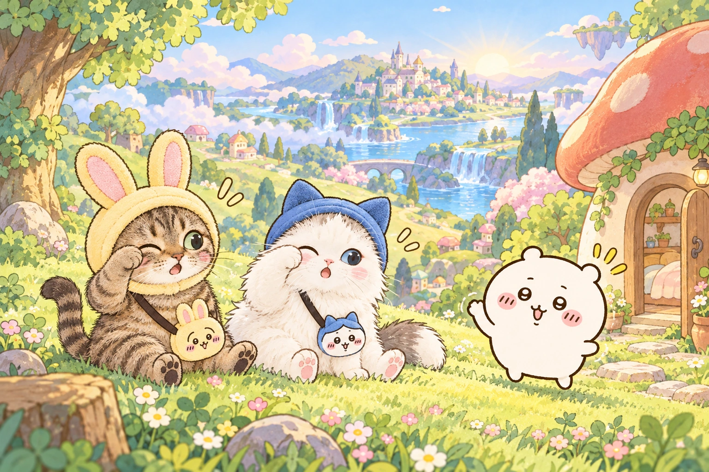
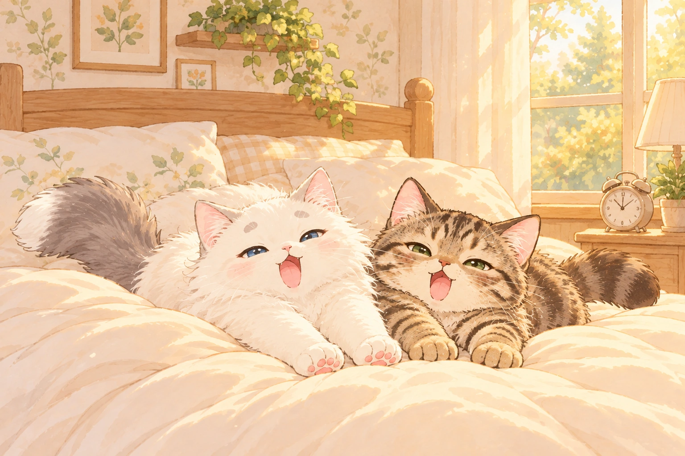

코코나나의 꿈속 하루
A LITTLE DREAM ADVENTURE
코코나나의
치이카와 꿈속 하루
눈을 떴더니, 치이카와 세상?!
나나우사기와 코코하치의 아주 특별한 하루.

4개의 장소8개의 퀴즈단서를 찾아 톡!
급하게 풀지 않아도 괜찮아. 우리 셋이 함께니까!
그림 속 동그라미를 눌러 살펴봐. 아래 버튼으로도 같은 곳을 조사할 수 있어.
발견한 단서 수첩
아직 발견한 단서가 없어.
BACK TO OUR SWEET HOME
다녀왔어, 우리의 집!

“나나야… 우리, 같은 꿈을 꾼 걸까?”
코코가 눈을 비비자 익숙한 방이 보였어.
토끼 모자도, 파란 모자도 사라졌지만
함께 풀을 뽑고 푸딩을 먹었던 기억은 또렷했지.
나나는 코코 곁에 바짝 붙어 앉았어.
“다음엔 치이카와를 우리 꿈에 초대하자!”
네 장소 완주퀴즈 8개 성공꿈속 우정 한 조각